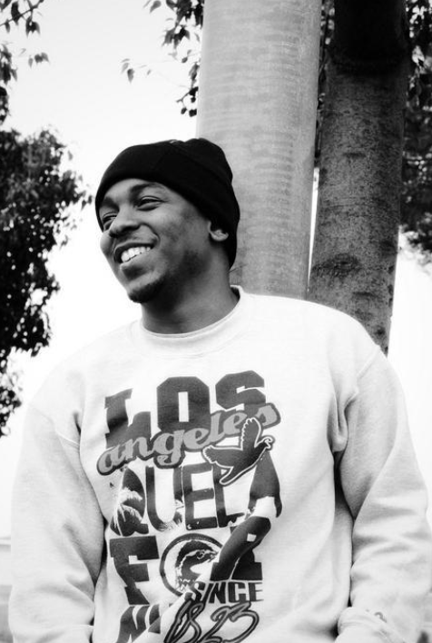

Damn, love or lust Damn, all of us Give me a run for my money There is nobody, no one to outrun me (Another world premier!) So give me a run for my money Sipping bubbly, feeling lovely, living lovely Just love me I wanna be with you,
ayy, I wanna be with I wanna be with you, ayy, I wanna be with I wanna be with you If I didn't ride blade on curb, would you still (love me) If I made up my mind at work, would you still (love me) Keep it a hundred, I’d rather
you trust me than to (love me) Keep it a whole one hund', don't got you I got nothing Ay, I got something (I got something) Hol’ up, we gon' function, no assumptions Feeling like Tyson wit' it, knock it out twice I'm with it, only
for the night, I'm kidding Only for life, yeah, only for life, yeah Only for…
